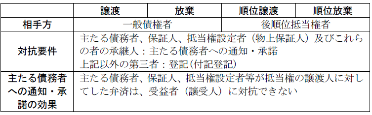
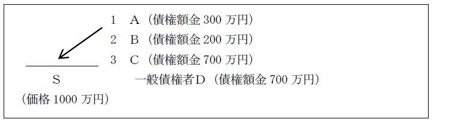

第３編 担保物権
第２章 抵当権
第３節 抵当権の効力
Ⅴ 抵当不動産の第三取得者の保護
1. 意義
抵当権者が所有権又は地上権を買い受けた第三取得者に対し、その売主に支払うべき抵当不動産の売買代金を直接自己に支払うように請求し、第三取得者がこれに応じて売買代金を弁済すると、抵当権はその者のために消滅する（378条）。代価弁済によって全額の弁済を受けられなかった抵当権者は、残額につき一般債権者となる。
2. 要件
(1) 抵当不動産について所有権又は地上権を買い受けた第三者
「地上権を買い受けた」とは、その全存続期間中の地代を一括して代金として支払って取得したことをいう。
無償だと抵当権者に支払うべき代価が存在しないので、取得は有償の場合に限られる。
(2) 抵当権者の請求と「第三者」の承諾
抵当権者が「第三者」（所有権又は地上権の有償取得者）に対して、その売主に支払うべき売買代金を自己に支払えと請求し、「第三者」がその請求に応ずることを要する。
抵当権者の請求がないにもかかわらず、「第三者」が自発的に抵当権者に売買代金を支払っても、単に第三者弁済としての効力を有するにすぎない。
(3) 代価の弁済
(a) 代価が被担保債権額を超えない場合
「第三者」は代価の全額を支払う必要があり、一部の支払では第三者弁済の効力を有するにすぎない。
(b) 代価が被担保債権額を超える場合
「第三者」は被担保債権額に相当する額の支払で足りる。
3. 効果
(1) 抵当権の消滅
「第三者」が抵当権者の請求に応じて代価を弁済すれば、その額が被担保債権額に満たない場合でも、抵当権は「第三者」のために消滅する。
(2) 代金債務の消滅と残余債務の存続
代価弁済をした「第三者」は、抵当権者に支払った範囲で、売主に対する代金債務を免れる。
被担保債権も代価弁済の額の範囲で消滅し、残額があれば、無担保債権として存続する。
1. 意義
：抵当不動産について所有権を取得した第三者が一定の代価又は金額を抵当権者に提供して抵当権の消滅を請求することができるという制度（379条以下）
この制度は、抵当権の実行によりいったん取得した所有権を失うことを防止するという、抵当不動産の第三取得者の保護のためのものである。
2. 消滅請求権者
消滅請求権者は、抵当不動産の所有権を取得した者（「第三取得者」）であり、有償・無償を問わない（379条）。
主たる債務者、保証人及びこれらの者の承継人が抵当不動産の所有権を取得しても、抵当権消滅請求をすることはできない（380条）。
抵当不動産の停止条件付第三取得者は、停止条件の成否が未定の間は消滅請求できない（381条）。
3. 消滅請求ができる時期
第三取得者は、抵当権の実行としての競売による差押えの効力発生前に、消滅請求しなければならない（382条）。ただし、一般債権者が強制執行として行う強制競売の場合は、差押えの効力発生後でも消滅請求できる。
4. 手続
消滅請求しようとする第三取得者は、登記（仮登記を含む）をした各債権者に対し一定の事項を記載した書面を送付しなければならない（383条）。登記をした債権者が複数いる場合には、全員に対して送付しなければならず、そのうち１人でも送付を受けない者がいる場合には、送付を受けた者に対しても消滅請求の申出は効力を生じない。
5. 効果
① 登記をしたすべての債権者が、第三取得者の提供した代価又は金額を承諾し、かつ、第三取得者がその代価・金額を払い渡し又は供託したときは、抵当権は消滅する（386条）。
② 債権者が承諾しない場合でも、以下の場合は承諾したものとみなされる（384条）。
ⅰ 債権者が上記4.の書面の送付を受けた後２か月以内に抵当権を実行して競売の申立てをしない場合
ⅱ 債権者が上記の競売申立てを取り下げた場合
ⅲ 上記の競売申立てを却下する旨の決定が確定した場合
ⅳ 上記の競売申立てに基づく競売手続を取り消す旨の決定が確定した場 合
6. 債権者の競売申立て
上記4.の書面の送付を受けたすべての債権者は、第三取得者の消滅請求への対抗処置として、その書面の送付を受けた時から２か月以内ならば、競売の申立てをすることができる（384条１号）。
この競売申立てについては、書面の送付を受けた時から２か月以内に、債務者及び抵当不動産の譲受人に、その旨を通知しなければならない（385条）。
Ⅵ 義務違反・抵当権侵害に対する救済
抵当権は目的物の交換価値を排他的に支配する担保物権である。従って、抵当権が侵害された場合には①物権的請求権として侵害の排除を請求できるほか、②損害賠償請求（709条）をすることができる。もっとも、いかなる場合に抵当権侵害があったかについては、抵当権が非占有担保であることに関連して争いがある。また、抵当権設定者による抵当権侵害については③期限の利益喪失や、増担保請求権の問題がある。
抵当権も物権であることから、物権一般の効力としての物権的請求権の行使が認められることになる。しかし、抵当権は目的物の価値を把握するものであり、抵当権設定者の目的物使用権能を奪うものではない。そこで、いかなる要件でいかなる請求が可能かが問題となる。
1. 抵当権に基づく妨害排除請求権
(1) 抵当山林の立木の伐採・搬出の禁止請求、有害な登記の抹消請求
①抵当山林の立木の伐採･搬出の禁止請求、②有害な登記の抹消請求は、抵当権の妨害排除請求権に基づいて認められる（①につき大判昭７.４.20、②につき最判平６.５.12）。
(2) 抵当不動産の不法占拠者に対する明渡請求の可否
Ａ 否定説
（理由）
①抵当権は非占有担保であり、抵当権者は抵当不動産の占有関係について干渉し得る余地はない。
②競売後には不法占拠者は排除されるから（民執法83条）、抵当不動産の担保価値は下落しない。
Ｂ 肯定説（最大判平11.11.24、最判平17.３.10）
第三者が抵当不動産を不法占拠することにより、抵当不動産の交換価値の実現が妨げられ抵当権者の優先弁済請求権の行使が困難になるような状態のときは、抵当権者は、抵当不動産の所有者に対して抵当不動産を適切に維持又は保存するよう求める請求権を保全するため、民法423条の法意に従い、所有者の不法占有者に対する妨害排除請求権を代位行使して抵当不動産の明渡しを請求することができる。なお、この場合には、抵当権に基づく妨害排除請求として、抵当権者が、占有者に対し、抵当不動産の明渡しを請求することもできる。
（理由）
①不法占拠者の存在は、競売価格を確実に引き下げ担保価値支配権を侵害する。
②民事執行法83条は、買受人が生じた後の処理規定にすぎず、競売の実をあげるためには不十分である。
(3) 占有権原のある者に対する請求の可否
抵当不動産の所有者から占有権原の設定を受けてこれを占有する者であっても、抵当権設定登記後に占有権原の設定を受けたものであり、その設定に抵当権の実行としての競売手続を妨害する目的が認められ、その占有により抵当不動産の交換価値の実現が妨げられて抵当権者の優先弁済請求権の行使が困難となるような状態があるときは、抵当権者は、当該占有者に対し、抵当権に基づく妨害排除請求として、上記状態の排除を求めることができる（最判平17.３.10）。
また、抵当不動産の所有者において抵当権に対する侵害が生じないように抵当不動産を維持管理することが期待できない場合には、抵当権者は、占有者に対し、直接自己への抵当不動産の明渡しを求めることができる（最大判平11.11.24、最判平17.３.10）。
2. 返還請求
第三者が不法に抵当不動産の一部を搬出した場合（例えば、山林の木材を伐採して搬出した場合）にその返還を請求できるか。
この点、抵当権には、目的物を占有する権能はないので、抵当権者が自己への返還を請求することはできないのが原則である。しかし、抵当不動産との一括競売の便宜と第三者による即時取得の防止のために設定者の下への返還請求は認められる（通説）。
なお、抵当権の不可分性から、物権的請求権の行使要件として、抵当不動産の担保価値が被担保債権を下回ることは不要である（通説）。
1. 設定者による侵害
抵当権侵害により、損害が生じたときには、抵当権侵害による不法行為（709条）が成立し、損害賠償請求権が発生する。しかし、設定者自身による担保物への侵害については、後述のように、抵当権の実行が可能になり（137条２号）、それ以上に損害賠償を認める意味がない。これを認めたとしても、その場合の損害賠償は、回収できなかった額を弁済せよというに等しいからである。
2. 第三者による侵害
第三者による侵害の場合には、通常、所有者の侵害者に対する損害賠償請求権も同時に発生し、担保権者はこれに物上代位できるので、抵当権者による侵害者に対する損害賠償請求権を常に認める必要があるというわけではない。しかし、例えば、抵当権登記が不法に抹消されたような場合には、これを認める必要がある。
もっとも、この場合、抵当権を実行してみなければ実際にどれだけ損害が生じているかがわからないことなどから、いくつかの問題がある。
(1) 発生要件
損害というためには、担保価値減少のために被担保債権の弁済を受けることができなくなったことを要する。
(2) 抵当権実行前の損害賠償請求
抵当権実行の前でも、弁済期到来後であれば請求できる（大判昭11.４.13・多数説）。
（理由）
①弁済期後であれば、抵当権の実行は可能であるから、損害賠償訴訟時の時価を基準に損害を確定できる。
②抵当権の実行を待っていては、抵当権者に回復することができない状況が生じるおそれがある。
3. 抵当不動産の占有者に対する賃料相当額の損害賠償請求の可否
Ｑ 抵当権者が抵当不動産の占有者に対して明渡請求ができる場合に、占有者に対して賃料相当額の損害賠償請求をすることができるか。
→ 否定説（最判平17.３.10）
（理由）
①抵当権者は、抵当不動産を自ら使用することはできず、民事執行法上の手続等によらずにその使用による利益を取得することもできない。
②抵当権者が抵当権に基づく妨害排除請求により取得する占有は、抵当不動産の所有者に代わり抵当不動産を維持管理することを目的とするものであって、抵当不動産の使用及びその使用による収益の取得を目的とするものではない。
抵当権設定者が抵当権侵害をした場合は、上記のほかに、以下の２点が問題となる。
1. 期限の利益の喪失
抵当権侵害が債務者の責めに帰すべき事由によるときは、債務者は期限の利益を失うので（137条２号）、抵当権者は直ちに抵当権を実行できる。
2. 増担保請求権
抵当権侵害があったときは、増担保を請求できる旨の特約がなされている場合も多い。
このような特約がない場合に抵当権者が増担保請求することができるかにつき民法に規定はなく、増担保請求が認められるか問題となる。この点、特約がない場合であっても、債務者が不法行為上の責任を負うべき場合などに限り増担保請求をすることができるとする説が有力である。
第４節 抵当権の処分
Ⅰ 総説
抵当権の処分とは、後順位抵当権者若しくはそれ以外の債権者との間で、抵当権自体を被担保債権と切り離して譲渡したり流通させたりすることをいう。資本の流動化を図るために、例外的に被担保債権と切り離された抵当権の処分が認められている。
Ⅱ 転抵当（376条１項前段）
：抵当権者がその抵当権を他の債権の担保に供すること
原抵当権者と転抵当権者との合意で成立する。転抵当の被担保債権や弁済期は、原抵当権と一致しなくてよい。
第三者に対抗するには登記が必要であり（付記登記による）、主たる債務者、保証人、抵当権設定者（物上保証人）及びこれらの承継人に対抗するには主たる債務者に対する通知・承諾が必要である（377条１項）。
転抵当権と原抵当権双方の被担保債権の弁済期が到来してから実行できる。
原抵当権の被担保債権の限度で優先弁済を受ける。
Ⅲ 抵当権の譲渡・放棄、順位の譲渡・放棄（376条１項）
1. 意義
(1) 抵当権の譲渡
抵当権を有しない特定の債権者に対して抵当権者が抵当権を与え、その限度において自分は抵当権を喪失し、無担保債権者になること
(2) 抵当権の放棄
抵当権を有しない特定の債権者に対して抵当権者が自己の有する優先弁済権を主張せず、本来配当されるべきであった額を両者の債権額に按分して平等に配当させる結果を生じさせる行為
2. 設定
抵当権の譲渡人とその譲受人間の契約で成立する。譲受人は、譲渡人と同一の債務者に対する債権者であって、抵当目的物につき登記した担保権を有しない無担保債権者であることを要する（376条１項後段）。
3. 対抗要件
主たる債務者、保証人、抵当権設定者（物上保証人）及びこれらの者の承継人に対抗するには主たる債務者への通知・承諾が必要である（377条１項）。
第三者に対抗するには登記が必要である（付記登記による）。
なお、上記の主たる債務者への通知・承諾がなされれば、主たる債務者、保証人、抵当権設定者等が抵当権の譲渡人に対してした弁済は、受益者（譲受人）に対抗できない（377条２項）。
4. 効果
(1) 抵当権の譲渡
譲渡人は譲受人の有する債権額の限度で無担保債権者となる。
譲受人は譲渡人の有した抵当権の範囲で抵当権を取得する。
(2) 抵当権の放棄
放棄を受けた無担保債権者と放棄者である抵当権者は、平等の立場で共同して優先弁済を受けることになる。
抵当権の順位の譲渡・放棄とは、後順位の抵当権を有する者の利益のために、その順位だけを処分することをいう。
抵当権の譲渡・放棄とでは、順位の譲渡・放棄を受ける者が抵当権者である点で異なるが、効果はそれに準じて考えればよい。
1. 意義
(1) 抵当権の順位譲渡
先順位抵当権者が、特定の後順位抵当権者に対し、自己の有する抵当権の限度において、後順位抵当権者に対する優先弁済権を認めること
(2) 抵当権の順位放棄
先順位抵当権者が、特定の後順位抵当権者との間で、自己の優先弁済権を主張せず、両者の支配している抵当目的物の交換価値から両者が債権額に按分比例して平等な配当を受けることとする抵当権者の行為
2. 設定
抵当権の順位の譲渡人（放棄する者）とその譲受人間の契約で成立する。
なお、376条１項の「同一の債務者」には、債務者でない抵当権設定者も含まれる。すなわち、債務者は同一でなくても設定者が同一であればよい（昭30.７.11民甲1427）。
3. 効果
(1) 抵当権の順位譲渡
譲渡人は後順位となり、譲受人は自己と譲渡人の配当額の合計額において優先弁済を受ける。譲渡人は残額があれば弁済を受けることができる。
(2) 抵当権の順位放棄
放棄者と放棄を受けた者とは同順位となり、両者の配当額の合計額を両者の債権額に比例して分配する。

Ⅳ 抵当権の順位の変更（374条１項）
：同一の抵当不動産に対する複数の抵当権者間で、抵当権を被担保債権から切り離してその順位を変更すること
1. 順位変更の当事者
(1) 当事者
抵当権の順位の変更は、その順位を絶対的に変更するものなので、順位の変更により影響を受ける抵当権者全員の合意が必要である。また、利害関係を有する者があるときはその承諾を得る必要がある（374条１項）。
(2) 具体例
(a) １番抵当権を第３順位に、３番抵当権を第１順位とする順位の変更の場合には、たとえ１番抵当権の被担保債権額が３番抵当権の被担保債権額より少なくても、２番抵当権者の合意も必要である。
(b) １番抵当権と２番抵当権の順位の変更であれば、３番抵当権者の合意は不要である。ただし、２番抵当権の順位を３番抵当権へ譲渡・放棄しているときは、３番抵当権者の承諾が必要となる。
2. 登記
抵当権の順位の変更は、登記（順位変更登記）をすることにより効力が生じる（374条２項）。登記は対抗要件ではなく、効力発生要件である。
順位の変更は、被担保債権より完全に切り離されて行われる（順位の絶対的変更）。
例えば、ＡＢＣの順位をＣＢＡの順位に変更する場合に、Ｃの債権額がＡの債権額を上回る場合には、Ｂの配当額は影響を受けることになる。
【抵当権の処分方法の対比】

設例：債務者Ｓの土地に、１番抵当権者Ａ（被担保債権300万円）、２番抵当権者Ｂ（200万円）、３番抵当権者Ｃ（700万円）、一般債権者Ｄ（700万円）が存在し、土地の競売価格は1000万円であった場合。
→ 譲渡・放棄、順位譲渡・順位放棄の計算の前提として、まず本来の配当額を出す。
抵当権の処分がなければ、先順位の抵当権から先に債権額を回収する。
本来の配当額：1番抵当権金300万円、2番抵当権金200万円、3番抵当権500万円。一般債権者Ｄに配当はない。
① 抵当権の譲渡（Ａ→Ｄ）
Ａの配当額金300万円からＤが先に債権を回収する（残金があればＡは残金から回収する）。
配当額 Ｄ：300万円
Ａ：300万円－300万円＝0円
Ｂ：200万円 Ｃ：500万円
② 抵当権の放棄（Ａ→Ｄ）
Ａの配当額金300万円を債権額に比例してＡとＤで分ける。
配当額 Ａ：300万円×300万円／1000万円＝90万円
Ｄ：300万円×700万円／1000万円＝210万円
Ｂ：200万円 Ｃ：500万円
③ 順位譲渡（Ａ→Ｃ）
ＡとＣの配当を足して、Ｃが先に債権を回収する（残金があればＡは残金から回収する）。
配当額 Ｃ：700万円 Ａ：（300万円＋500万円）－700万円＝100万円
Ｂ：200万円 Ｄ：0円
④ 順位放棄（Ａ→Ｃ）
ＡとＣの配当を足して、債権額に比例してＡとＣで分ける。
配当額 Ａ：（300万円＋500万円）×300万円／1000万円＝240万円
Ｃ：（300万円＋500万円）×700万円／1000万円＝560万円
Ｂ：200万円 Ｄ：0円